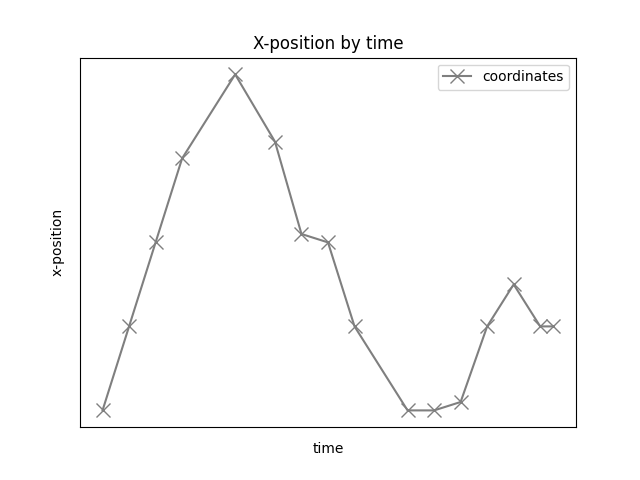
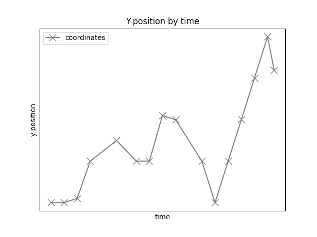

Note
Go to the end to download the full example code or to run this example in your browser via Binder
Spatial Analyses¶
Analyze spatial data and apply spatial measures to spiking data.
This tutorial primarily covers the spiketools.spatial module.
Apply spatial measures to spatial data¶
This tutorial explores functionality for analyzing how spiking data relates to space, including analysis such as place and target cells. To do so, we will use some example simulated data.
Sections¶
This tutorial contains the following sections:
Compute and plot distances and speed from position data
Divide position in spatial bins
Compute spatial bin assignment using spatial bin edges
Compute time spent in each spatial bin
Compute and plot occupancy and position counts
Compute 1D and 2D spatial information
# Import auxiliary libraries
import numpy as np
# Import functions from spiketools.spatial and related utilities
from spiketools.spatial.distance import (compute_distance, compute_distances,
compute_cumulative_distances)
from spiketools.spatial.speed import compute_speed
from spiketools.spatial.occupancy import (compute_bin_edges, compute_bin_assignment,
compute_bin_counts_assgn, compute_bin_counts_pos,
normalize_bin_counts, compute_occupancy)
from spiketools.spatial.utils import compute_pos_ranges, compute_bin_width
from spiketools.spatial.information import compute_spatial_information
from spiketools.utils.timestamps import compute_sample_durations
# Import spiketrain simulation function
from spiketools.sim.train import sim_spiketrain_binom
# Import plotting functions
from spiketools.plts.spatial import plot_positions, plot_heatmap, plot_position_by_time
from spiketools.plts.utils import make_axes
To start, we will first define some simulated data to work with
# Define some position data
x_pos = np.array([0, 1, 2, 3, 4, 3.2, 2.1, 2, 1, 0, 0, 0.1, 1, 1.5, 1, 1])
y_pos = np.array([0, 0, 0.1, 1, 1.5, 1, 1, 2.1, 2, 1, 0, 1, 2, 3, 4, 3.2])
position = np.array([x_pos, y_pos])
# Define timestamps
timestamps = np.array([0, 1, 2, 3, 5, 6.5, 7.5, 8.5, 9.5, 11.5, 12.5, 13.5, 14.5, 15.5, 16.5, 17])
Compute and plot distances and speed using position¶
First, we will explore some basic properties of the simulated position data, including visualizing the data.
# Calculate the range of the x and y position data
ranges = compute_pos_ranges(position)
print('The x-position ranges from {:1.1f} to {:1.1f}'.format(ranges[0][0], ranges[0][1]))
print('The y-position ranges from {:1.1f} to {:1.1f}'.format(ranges[1][0], ranges[1][1]))
The x-position ranges from 0.0 to 4.0
The y-position ranges from 0.0 to 4.0
# Plot positions (coordinates marked x are the actual points)
plot_positions(position, alpha=1, ls='-', marker='x', color='tab:gray',
markersize=10, xlabel='x-position', ylabel='y-position',
legend=['coordinates'], title='Tracking')
# Plot x-position by time
plot_position_by_time(timestamps, x_pos, alpha=1, ls='-', marker='x', color='tab:gray',
markersize=10, xlabel='time', ylabel='x-position',
legend=['coordinates'], title='X-position by time')
# Plot y-position by time
plot_position_by_time(timestamps, y_pos, alpha=1, ls='-', marker='x', color='tab:gray',
markersize=10, xlabel='time', ylabel='y-position',
legend=['coordinates'], title='Y-position by time')
- 
- 
Next, we will use the x- and y-position values to compute distance between each set of points, cumulative distance traveled, and speed.
With our position data, the following functions can be used for this, including:
compute_distance(): which computes the distance between two pointscompute_distances(): which computes distances across a sequence of positionscompute_cumulative_distances(): which computes cumulative distance across positions
# Compute distance between start and end point
dist_start_end = compute_distance(position[:, 0], position[:, -1])
# Compute distance traveled at each point
dist_traveled = compute_distances(position)
# Compute total distance traveled
cumulative_dist_traveled = compute_cumulative_distances(position)
# Compute speed at each point
speeds = compute_speed(position, timestamps)
# Plot distance and speed measures
ax1, ax2, ax3 = make_axes(3, 1, sharex=True, hspace=0.4, figsize=(8, 6))
plt_kwargs = {'alpha' : 1, 'ls' : '-', 'marker' : 'x', 'markersize' : 10}
# Plot distance traveled at each time
plot_position_by_time(timestamps[1:], dist_traveled, color='tab:pink',
title='Distance between each point',
xlabel='Time (s)', ylabel='Distance',
**plt_kwargs, ax=ax1)
# Plot cumulative distance traveled per time
plot_position_by_time(timestamps, cumulative_dist_traveled, color='tab:olive',
title='Cumulative distance traveled',
xlabel='Time (s)', ylabel='Cumulative Distance',
**plt_kwargs, ax=ax2)
# Plot speed at each time point
plot_position_by_time(timestamps, speeds, color='tab:cyan',
title='Speed', xlabel='Time (S)', ylabel='Speed',
**plt_kwargs, ax=ax3)
Divide position in spatial bin edges and plot¶
Now we can start binning our position data.
To do so, we will compute x- and y- spatial bin edges, using the
compute_bin_edges() function.
Once we have our bin edges, we can compute the bin widths using the
compute_bin_width() function.
# Define spatial binning: 3 x-bins and 5 y-bins
bins = [3, 5]
# Compute spatial bin edges
x_edges, y_edges = compute_bin_edges(position, bins)
# Compute the width of each spatial bin
x_bins_spatial_width = compute_bin_width(x_edges)
y_bins_spatial_width = compute_bin_width(y_edges)
print('The x spatial bins have width = {:.3}'.format(x_bins_spatial_width))
print('The y spatial bins have width = {:.3}'.format(y_bins_spatial_width))
The x spatial bins have width = 1.33
The y spatial bins have width = 0.8
Now that we have created our bin definition, we can plot the spatial grid.
# Plot grid of spatial bins with tracking on top
plot_positions(position, x_bins=x_edges, y_bins=y_edges,
alpha=1, ls='-', marker='x', color='tab:gray',
markersize=10, xlabel='x-position', ylabel='y-position',
legend=['Tracking'], legend_loc='upper left',
title='Tracking and spatial bins')

Compute spatial bin assignment using spatial bin edges¶
Next, we will compute the spatial bin assignment for the position data using the previously computed spatial bin edges.
To do so, we will use the compute_bin_assignment() function.
# Now let us check which bins the position values are in, using the same x_edges and y_edges
n_points = 5
x_bins, y_bins = compute_bin_assignment(position[:, :n_points], x_edges, y_edges)
# We can check they match the positions in plot (ii)
for ind in range(0, n_points):
print('The point (x, y) = ({:1.1f}, {:1.1f}) is in x_bin {:1d} and y_bin {:1d}.'.format(\
position[0, ind], position[1, ind], x_bins[ind], y_bins[ind]))
The point (x, y) = (0.0, 0.0) is in x_bin 0 and y_bin 0.
The point (x, y) = (1.0, 0.0) is in x_bin 0 and y_bin 0.
The point (x, y) = (2.0, 0.1) is in x_bin 1 and y_bin 0.
The point (x, y) = (3.0, 1.0) is in x_bin 2 and y_bin 1.
The point (x, y) = (4.0, 1.5) is in x_bin 2 and y_bin 1.
Compute duration of each sample¶
Next, we can compute the time duration of the position samples, using the
compute_sample_durations() function.
# Compute the durations of the samples
sample_times = compute_sample_durations(timestamps)
print('The time durations of position samples are: ', sample_times)
The time durations of position samples are: [1. 1. 1. 2. 1.5 1. 1. 1. 2. 1. 1. 1. 1. 1. 0.5 0. ]
Compute and plot occupancy and position counts¶
Now we are interested in how much time was spent in each bin of the spatial grid.
To measure this, we will compute the occupancy across the spatial bins, using
the compute_occupancy() function.
For the 2D case, we compute occupancy using position, timestamps, bins. We can also optionally provide speed information, and set min or max speed threshold(s).
# Define minimum speed threshold, used to remove entries if the speed is less than the threshold
min_speed = .5e-3
# Compute the 2D occupancy
occupancy = compute_occupancy(position, timestamps, bins, speed=speeds, min_speed=min_speed)
Now that we have computed the occupancy, we can plot it using the
plot_heatmap() function.
# Plot the compute 2D occupancy
plot_heatmap(occupancy, cbar=True,
title='Occupancy heatmap w/ speed threshold')
Another way to explore occupancy measures is to check the number of occurrences within each spatial bin.
This can be computed with the compute_bin_counts_pos() function.
# Compute the 2D position bin occurrence counts
bin_counts_pos = compute_bin_counts_pos(position, bins)
# Plot the 2D position bin occurrence counts
plot_heatmap(bin_counts_pos, cbar=True,
title='Position bin occurrence counts heatmap')
We can also compute occupancy for 1D data.
For this examples, we will compute 1D occupancy using the x-position data with the same timestamps, x-bins, speed, and speed threshold as before.
# Compute the 1D occupancy
occupancy_1d = compute_occupancy(position[0], timestamps, bins[0],
speed=speeds, min_speed=min_speed)
# Plot the 1D occupancy
plot_heatmap(occupancy_1d, title='X-occupancy heatmap w/ speed threshold')
As before, we can also check the bin occurrence counts for the 1D data.
# Compute and plot 1D position bin occurrence counts for x-position
bin_counts_pos_1d = compute_bin_counts_pos(position[0], bins[0])
plot_heatmap(bin_counts_pos_1d, title='X-position bin occurrence counts heatmap')
Compute 1D and 2D spatial information¶
Next, we want to measure the relationship between spiking activity and position data.
To do so, we will compute a spatial information measure between simulated spiking data and the associated position data.
To do so, we will use the compute_spatial_information() function.
# Simulate a spike train with chance level
spike_train = sim_spiketrain_binom(0.5, n_samples=len(x_pos))
# Get spike position bins, and the x and y position bins corresponding to spike positions
spike_bins = np.where(spike_train == 1)[0]
spike_x, spike_y = compute_bin_assignment(position[:, spike_bins], x_edges, y_edges,
include_edge=True)
Let’s first calculate the 1D spatial information, using only the x-dimension.
To do so, we will compute the bin firing, using the
compute_bin_counts_assgn() function to compute the number of spikes per bin.
We then need to normalize this measure by occupancy, which we can do with the
normalize_bin_counts() function.
# Compute bin firing and normalize it
bin_firing_1d = compute_bin_counts_assgn(bins=[bins[0]], xbins=spike_x, occupancy=occupancy_1d)
normalized_bin_fr_1d = normalize_bin_counts(bin_firing_1d, occupancy=occupancy_1d)
We are now ready to compute the spatial information.
# Compute 1d spatial information
spatial_information_1d = compute_spatial_information(normalized_bin_fr_1d, occupancy_1d,
normalize=False)
print('The 1D spatial information is = {:.3}'.format(spatial_information_1d))
The 1D spatial information is = 0.0633
We can also follow the same procedure to compute spatial information for 2D data.
# Compute bin firing and normalize it
bin_firing = compute_bin_counts_assgn(bins=bins, xbins=spike_x, ybins=spike_y)
normalized_bin_fr = normalize_bin_counts(bin_firing, occupancy=occupancy)
# Compute 2d spatial information
spatial_information_2d = compute_spatial_information(normalized_bin_fr, occupancy, normalize=False)
print('The 2D spatial information is = {:.3}'.format(spatial_information_2d))
The 2D spatial information is = 0.386
Total running time of the script: ( 0 minutes 0.715 seconds)